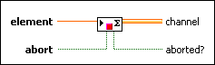

Write With Abort Endpoint
Requires: Base Development System
Adds a value to an Accumulator Tag channel or signals the channel to abort. This endpoint is the same as the Write endpoint except that it has an abort input and an aborted? output. You can use the abort capability of the Accumulator Tag channel to close a channel abruptly, ignoring any data left in the channel buffer. You must use this endpoint together with the Read With Abort endpoint.
You can drop this endpoint on the block diagram by right-clicking a terminal or a wire and selecting Create»Channel Writer»Accumulator Tag»Write With Abort.
Details
